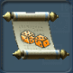
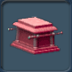
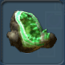
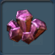
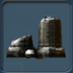

目次 > ゲームについて > シミュレーション攻略 > SPORE > コレクション一覧 > 宇宙ステージ
| 概要 | 情報 | ステージ攻略 |
| コレクション一覧 | 継承アビリティー一覧 | アチーブメント一覧 |
| SPORE 攻略へ | 目次へ戻る |
| [ 細胞ステージ ] [ クリーチャーステージ ] [ 集落ステージ ] [ 文明ステージ ] [ 宇宙ステージ ] |
| [ 1 ] [ 2 ] [ 3 ] [ 4 ] [ 5 ] [ 6 ] |
| アーティファクト |
| 名前 | 画像 | 値段 | 入手条件 |
| チャンスの巻物 |  | 拾う | |
| 秩序の巻物 | 拾う | ||
| 生命の巻物 | 拾う | ||
| 貴重な化石 | 拾う | ||
| 銀河オブジェクト |  | 見つける | |
| 貴重な晶洞石 |  | 拾う | |
| 貴重な宝石 |  | 拾う | |
| 貴重な遺物 |  | 拾う | |
| 科学の巻物 | |
拾う | |
| 調和の巻物 | 拾う | ||
| 貴重な像 | 拾う | ||
| メルヘン惑星 | 見つける | ||
| 反映の巻物 | 拾う | ||
| 力の巻物 | 拾う | ||
| 信仰の巻物 | 拾う | ||
| 名前 | 画像 | 値段 | 入手条件 |
| [ 1 ] [ 2 ] [ 3 ] [ 4 ] [ 5 ] [ 6 ] |
| [ 細胞ステージ ] [ クリーチャーステージ ] [ 集落ステージ ] [ 文明ステージ ] [ 宇宙ステージ ] |
| 概要 | 情報 | ステージ攻略 |
| コレクション一覧 | 継承アビリティー一覧 | アチーブメント一覧 |
| ページの上部へ | SPORE 攻略へ | 目次へ戻る |